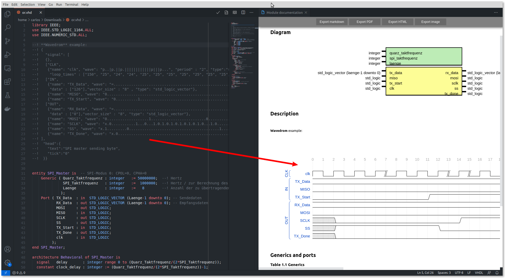
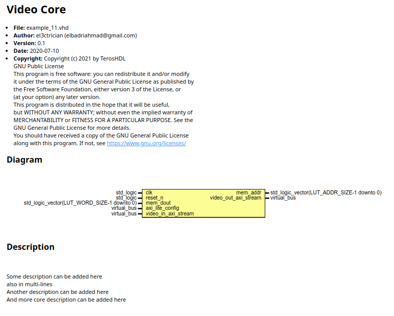

Documenter¶
Features¶
The supported elements of the languages are represented in the following table:
Element |
Verilog/SV |
VHDL |
|---|---|---|
FSM |
Yes |
Yes |
Diagram |
Yes |
Yes |
Description |
Yes |
Yes |
Ports |
Yes |
Yes |
Parameters/Generics |
Yes |
Yes |
Constants |
Yes |
Yes |
Typedef/Type |
Yes |
Yes |
Signals |
Yes |
Yes |
Always/process |
Yes |
Yes |
Instantiations |
Yes |
Yes |
Some elements can be avoided in documentation, or documented only if a comment hs been added.
Special comment symbols¶
A special symbol can be configured to identify the coments to be extracted
from the HDL file. The special symbol must follow the comment characters of
the language that is being used. By default the special character is !
The comments support MarkDown so it can be used to add some style to the documentation (links, tables,etc).
Example:
--! This is a description
--! of the entity.
entity counter is
port (
clk: in std_logic; --! Clock comment
out_data: out std_logic --! Description **port comment**
);
end counter;
Go to the documenter configuration section for more information.
Documenting files¶
General rules:
The comments without the special character will not be part of the generated documentation.
The description text and Wavedrom & bitfield diagrams must be described before the module declaration.
Multiline comments are allowed in the lines above a declaration.
If there are multilines and inline comments. Inline comments have priority.
MarkDown are allowed inside the comments. MarkDown tables, links, label or html coded embedded in the comments will be processed by the documenter.
Wavedrom¶
TerosHDL supports WaveJSON format in the module description. The format describes digital timing diagrams. You can learn more about it in the wavedrom tutorial.
Bitfield¶
TerosHDL can also parse data descriptions in the same way that wavedrom. You can learn more about bitfield.

Doxygen support¶
Doxygen commands are parsed by the documenter. Example:
--! @title Video Core
--! @file example_11.vhd
--! @author el3ctrician (elbadriahmad@gmail.com)
--! @version 0.1
--! @date 2020-07-10
--!
--! @copyright Copyright (c) 2021 by TerosHDL
--! GNU Public License
--! This program is free software: you can redistribute it and/or modify
--! it under the terms of the GNU General Public License as published by
--! the Free Software Foundation, either version 3 of the License, or
--! (at your option) any later version.
--! This program is distributed in the hope that it will be useful,
--! but WITHOUT ANY WARRANTY; without even the implied warranty of
--! MERCHANTABILITY or FITNESS FOR A PARTICULAR PURPOSE. See the
--! GNU General Public License for more details.
--! You should have received a copy of the GNU General Public License
--! along with this program. If not, see <https://www.gnu.org/licenses/>
--!
--! @brief Some description can be added here
--! also in multi-lines
--! @details Another description can be added here
--! And more core description can be added here
entity video_core is
port (
--! core clock, 100 Mhz
clk : in std_logic;
--! asynchronous active low reset
reset_n : in std_logic;
--! @virtualbus axi_lite_config an AXI4-Lite interface to write core registers
s_axi_awaddr : in std_logic_vector(AXI_LITE_ADDR_WIDTH - 1 downto 0);
s_axi_awprot : in std_logic_vector(2 downto 0);
s_axi_awvalid : in std_logic;
s_axi_awready : out std_logic;
s_axi_wdata : in std_logic_vector(AXI_LITE_DATA_WIDTH - 1 downto 0);
s_axi_wstrb : in std_logic_vector((AXI_LITE_DATA_WIDTH/8) - 1 downto 0);
s_axi_wvalid : in std_logic;
s_axi_wready : out std_logic;
s_axi_bresp : out std_logic_vector(1 downto 0);
s_axi_bvalid : out std_logic;
s_axi_bready : in std_logic;
s_axi_araddr : in std_logic_vector(AXI_LITE_ADDR_WIDTH - 1 downto 0);
s_axi_arprot : in std_logic_vector(2 downto 0);
s_axi_arvalid : in std_logic;
s_axi_arready : out std_logic;
s_axi_rdata : out std_logic_vector(AXI_LITE_DATA_WIDTH - 1 downto 0);
s_axi_rresp : out std_logic_vector(1 downto 0);
s_axi_rvalid : out std_logic;
s_axi_rready : in std_logic;
--! @end
--! @virtualbus video_in_axi_stream @dir in a slave axi stream interface for video in
--!
--! axis data bus, transfers two pixels per clock with pixel width of 12 bits in mono color
video_in_tdata : in std_logic_vector(23 downto 0);
--! axis last, used to indicate the end of packet which in video context refer to line
video_in_tlast : in std_logic;
--! axis user, usually is user defined but in video context it marks the start of a frame
video_in_tuser : in std_logic_vector(0 downto 0);
--! axis valid handshake signal
video_in_tvalid : in std_logic;
--! axis ready handshake signal
video_in_tready : out std_logic;
--! @virtualbus video_out_axi_stream @dir out @keepports a master axi stream interface for video out
--!
--! axis data bus, transfers two pixels per clock with pixel width of 10 bits in mono color
video_out_tdata : out std_logic_vector(23 downto 0);
--! axis last, used to indicate the end of packet which in video context refer to line
video_out_tlast : out std_logic;
--! axis user, usually is user defined but in video context it marks the start of a frame
video_out_tuser : out std_logic_vector(0 downto 0);
--! axis valid handshake signal
video_out_tvalid : out std_logic;
--! axis ready handshake signal
video_out_tready : in std_logic;
--! @end
--! data out signal, read data from memory
mem_dout : in std_logic_vector(LUT_WORD_SIZE-1 downto 0);
--! memory address to enable read
mem_addr : out std_logic_vector(LUT_ADDR_SIZE-1 downto 0)
);
end video_core;
And the result:
Doxygen commands can be provided both with @ or with \ prefix. The list of the currently supported commands is down here:
Command |
Behavior |
Notes |
|---|---|---|
|
changes the generated documentation page title |
Single line command, if not provided defaults to : Entity <entity_name> |
|
Adds an entry for the file name |
Single line command |
|
Adds an entry for the author name |
Single line command |
|
Adds an entry for the code version |
Single line command |
|
Adds an entry for the file date |
Single line command |
|
Adds a copyright statements |
multi-line, ends on the first empty line |
|
appends the following text to the description |
Stripped from text, following text is located in the description section |
|
appends the following text to the description |
Stripped from text, following text is located in the description section |
Virtual Buses¶
It’s possible to combine ports into virtual buses to simplify the diagram and the ports table.
All the ports between the lines: --! @virtualbus and --! @end will be grouped in the diagram and the ports table
Syntax arguments: --! @virtualbus [name_of_interface] @dir [in/out] @keepports [description]
@dirselects to virtualbus direction, possible valuesin/out. Default isin.@keepportskeeps the description of the ports in the table instead of group together in a bus. If not provided, ports are stripped from the diagram and the table

Usage instructions¶
Open a VHDL/Verilog file and click the documenter button.
TerosHDL will open a preview of the generated documentation.

Select what to show and the verbosity of the documentation. It is possible to document everything, just the elements that are being comented or nothing for each documentation section available.
Export the generated documentation to PDF, MarkDown, HTML or SVG diagrams.
Every time the file is edited and saved, the preview will update the documentation automatically.